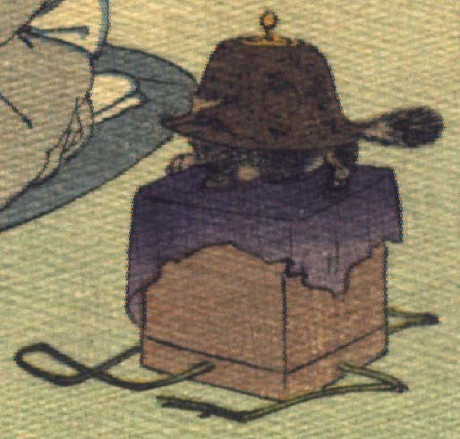

文福茶釜。茶釜の正面中央が突き出て鼻のようになり、その先にひげが生えている。茶釜の後方中央からふさふさとした尻尾が生えている。底に4本の足がついている。紫色の布を上にかけた箱の上にのっている。
著作者：Jules Adam／出典：親書誌：U426_nichibunken_0119：La bouillotte du bonheur／日付：2006／資源識別子：U426_nichibunken_0119_0002_0000
Copyright (c)2010- International Research Center for Japanese Studies, Kyoto, Japan. All rights reserved.